caso comercial del autor
jo-loves-2019-910873603
J1/J2 · Bolsa 17–29 s; filtros 35–48 s. La composición exterior es presentación del estudio, no UI que Monetta deba imitar.
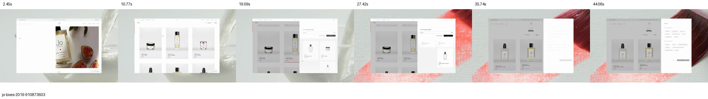
Clip examinado: 48.96 s. Fotogramas muestreados, no medición de rendimiento.caso comercial del autor
paul-smith-1181182346
P1 · Fotografías, variantes y ampliación de detalle. Observar 4–9 s y tramo final.
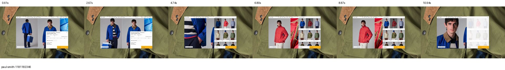
Clip examinado: 12.15 s. Fotogramas muestreados, no medición de rendimiento.caso comercial del autor
paul-smith-1181192926
P2 · Ficha móvil y controles de selección; distinguir scroll del montaje y efectos de la interfaz.
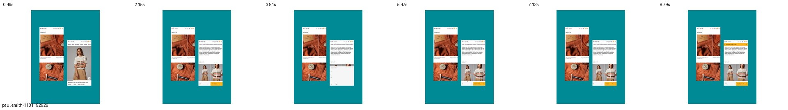
Clip examinado: 9.77 s. Fotogramas muestreados, no medición de rendimiento.caso comercial del autor
jo-loves-2019-910873683
J4 · Menú lateral conservando parte del contexto.
Clip examinado: 15.68 s. Fotogramas muestreados, no medición de rendimiento.caso comercial del autor
jo-loves-2019-910873554
J3 · Ficha y fotografía editorial. No prueba latencia de servidor ni selección de variante.
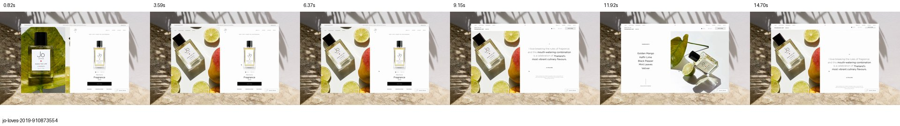
Clip examinado: 16.33 s. Fotogramas muestreados, no medición de rendimiento.caso comercial del autor
jo-loves-2019-910873713
J5 · Imágenes de ingredientes sobre la lista. Descartado para el catálogo de Monetta.
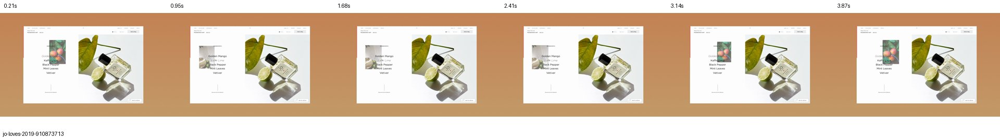
Clip examinado: 4.30 s. Fotogramas muestreados, no medición de rendimiento.demo técnica
react-path-drawing
Dibujo progresivo de trazos. Referencia técnica para logo B, no un ejemplo de lettering terminado.
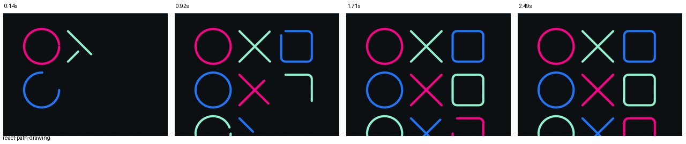
Clip examinado: 2.77 s. Fotogramas muestreados, no medición de rendimiento.demo técnica
svelte-press
Contracción y recuperación. Reducir mucho la amplitud para Monetta.
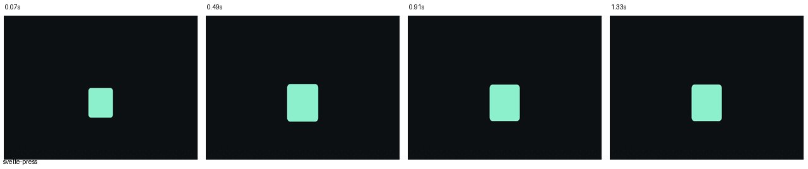
Clip examinado: 1.48 s. Fotogramas muestreados, no medición de rendimiento.demo técnica
vue-copy-button
Confirmación local. Alternativa a toast o diálogo para una acción pequeña.
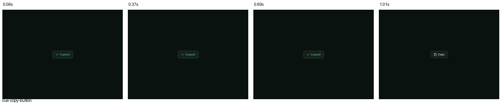
Clip examinado: 1.12 s. Fotogramas muestreados, no medición de rendimiento.demo técnica
vue-carousel-thumbnail-gallery
Galería y miniaturas coordinadas; usar gesto deliberado.
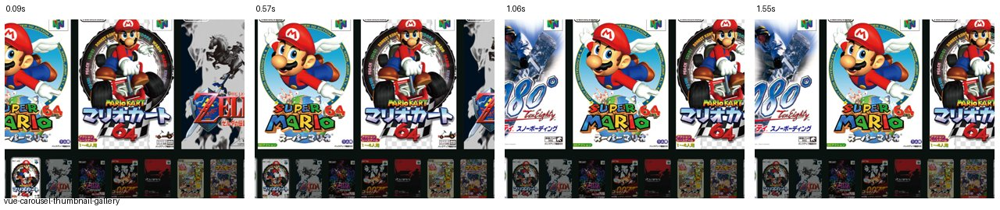
Clip examinado: 1.72 s. Fotogramas muestreados, no medición de rendimiento.demo técnica
vue-carousel-lightbox
Fotografía ampliada y retorno a galería.
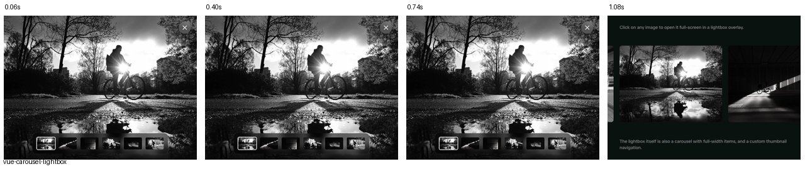
Clip examinado: 1.20 s. Fotogramas muestreados, no medición de rendimiento.demo técnica
react-base-checkbox
Trazo de selección localizado; check estático como comparación.
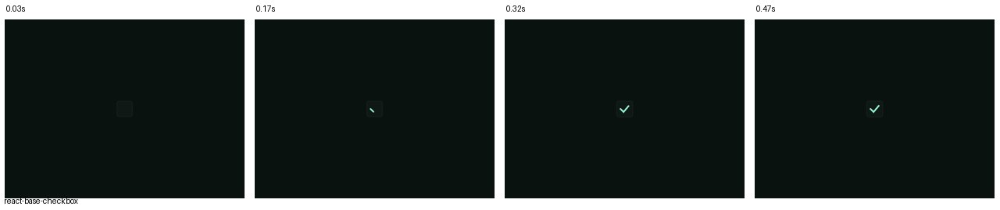
Clip examinado: 0.52 s. Fotogramas muestreados, no medición de rendimiento.demo técnica
vue-smooth-tabs
Indicador activo. No copiar blur y desplazamiento del cuerpo.
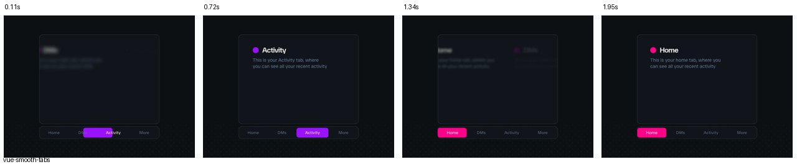
Clip examinado: 2.17 s. Fotogramas muestreados, no medición de rendimiento.demo técnica
vue-radix-accordion
Apertura/cierre. No ocultar información crítica ni animar párrafos largos.
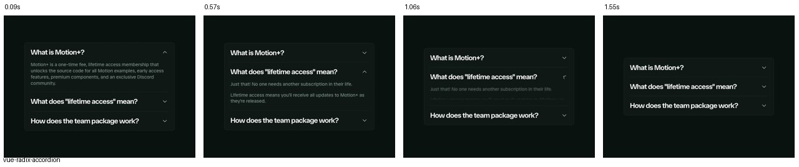
Clip examinado: 1.72 s. Fotogramas muestreados, no medición de rendimiento.demo técnica
vue-multi-state-badge
Processing, Done y error. Adoptar estados; evitar anchura variable que desplace controles.
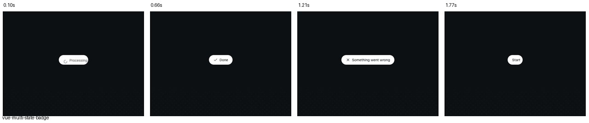
Clip examinado: 1.97 s. Fotogramas muestreados, no medición de rendimiento.demo técnica
vue-swipe-actions
Acciones reveladas por deslizamiento. Descartado inicialmente por descubribilidad.
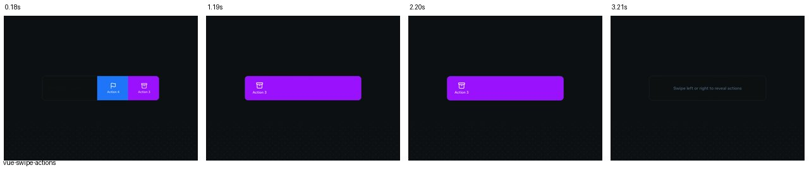
Clip examinado: 3.57 s. Fotogramas muestreados, no medición de rendimiento.demo técnica
js-add-to-basket
Vuelo, impacto y halo: descartados. El clip corto muestra principalmente recuperación; abrir demo para la secuencia completa.
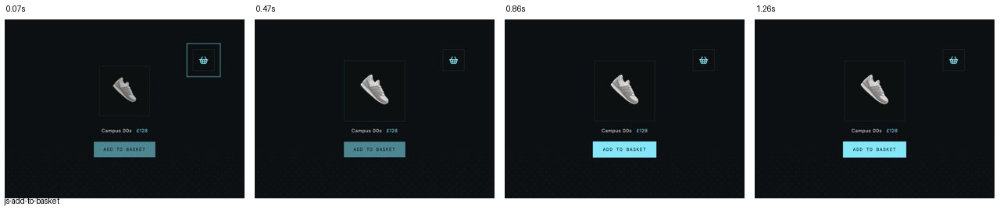
Clip examinado: 1.40 s. Fotogramas muestreados, no medición de rendimiento.demo técnica
vue-split-text
Texto revelado escalonadamente. Adaptación a letras del logo; descartado para textos esenciales.
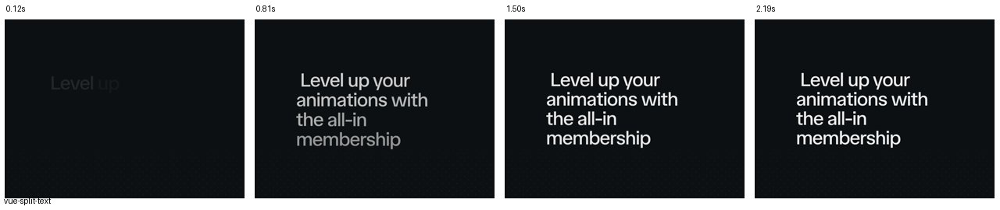
Clip examinado: 2.43 s. Fotogramas muestreados, no medición de rendimiento.Fuentes excluidas y límites
Christopher Ward: los clips muestran emails/CRM, no interacciones de app. Paul Smith 1181178813: montaje de pantallas, no prueba de navegación. NET-A-PORTER: descripción histórica consultada, película no verificada visualmente. Se descartaron también previews sin correspondencia exacta o sin movimiento visible suficiente.
Las fuentes y videos pertenecen a sus autores. Estas hojas de fotogramas son extractos de análisis con atribución y enlaces. No son activos para incorporar a Monetta.